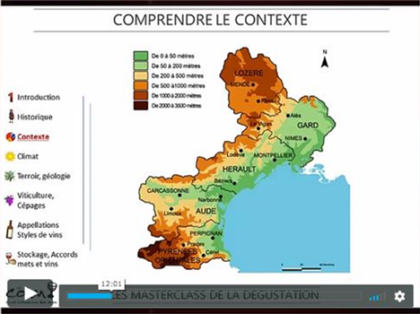
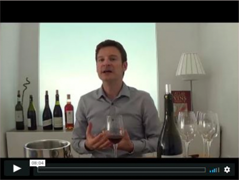

VOTRE FORMATION DU MOIS, ET VOS VIDÉOS DE DÉGUSTATION


Chaque mois, je vous envoie votre nouvelle formation en ligne sur le thème du mois (environ 2h de formation), composée d’un cours d’oenologie en ligne (environ 1h), et de 6 vidéos de dégustation (environ 1h).
Quand allez-vous recevoir la formation ?
Vous allez recevoir vos formations chaque mois, entre le
25
et le 30 du mois. Je vous envoie un lien qui vous permet de consulter et télécharger la formation en
cours (vidéos de formations, audios, pdf de cours, et vidéos de dégustation).
Quelques exemples de formations :